Noções de sistemática
Prof. Maurício Garcia de Camargo
2026-05-07
Taxonomia, classificação e sistemática
“A taxonomia descreve a biodiversidade, a classificação procura algum tipo de ordem e a sistemática apresenta um sistema geral de referência (Amorim, 2005).”1
- A Taxonomia descreve, nomeia e classifica os seres vivos.
- É um trabalho minucioso, mas gratificante.
O trabalho do taxonomista é na lupa e no microscópio
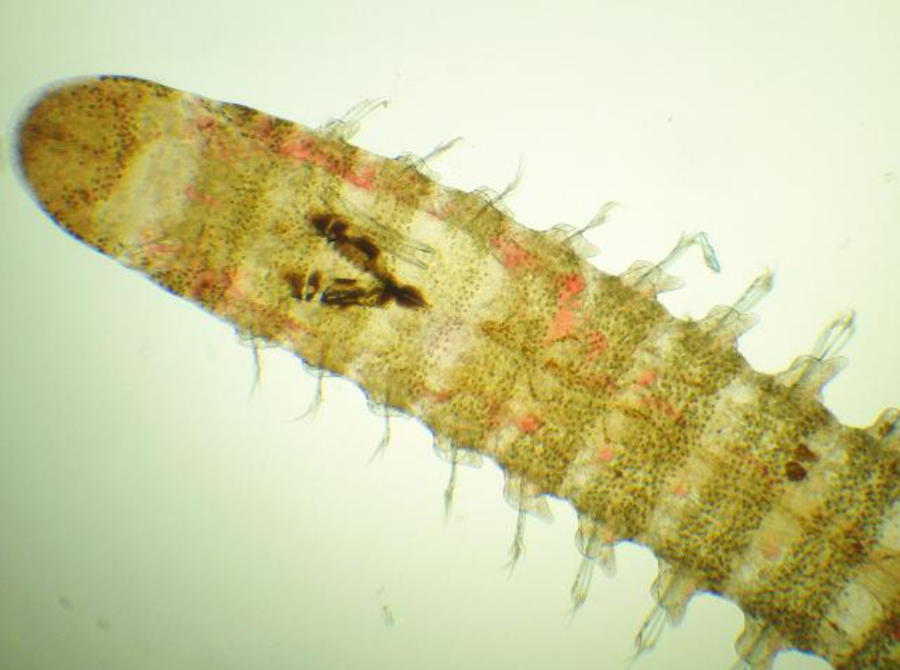
O trabalho de identificação de espécies envolve exame detalhado das estruturas.

Taxonomia, classificação e sistemática
“A taxonomia descreve a biodiversidade, a classificação procura algum tipo de ordem e a sistemática apresenta um sistema geral de referência (Amorim, 2005).”
- Taxonomia descrever, nomear e classificar os seres vivos.
- A classificação separa os organismos em grupos, baseado num conjunto de critérios (ou parâmetros) pré-estabelecidos.
- Sistemática é um sistema de classificação biológica. Cada sistema de classificação depende dos parâmetros escolhidos, e os parâmetros mudaram ao longo da história.
Lineu criou a sistemática clássica, baseada em parâmetros morfológicos para agrupar a hierarquia de táxons (= unidade taxonômica).
Parâmetros de classificação da biodiversidade
Parâmetros mudaram ao longo da história
- 1. Sistemática antiga
- Aristóteles (400 aC)
- Parâmetros intuitivos
- Aristóteles (400 aC)
- 2. Sistemática clássica
(Systema naturae )- Linneaus (1758)
- Parâmetros morfológicos
- 3. Sistemática evolutiva
- Darwin (1858)
- Parâmetros evolutivos
- 4. Sistemática filogenética = cladística
- Hennig (1966)
- Parâmetros evolutivos e filogenéticos
Sistemática antiga de Aristóteles
Aristóteles (400 a.C.) e a sistemática biológica intuitiva
- Conhecia apenas o mundo macroscópico
- Em Historia animalium descreveu 500 espécies.
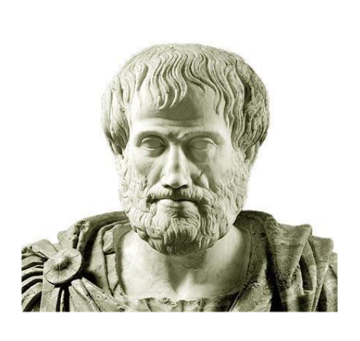
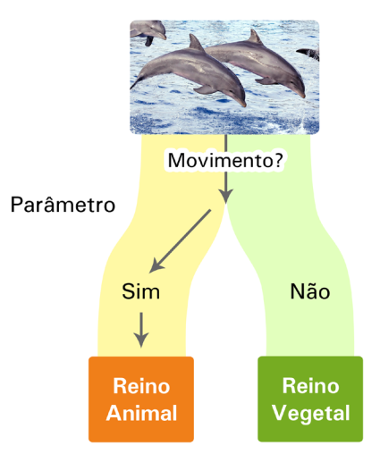
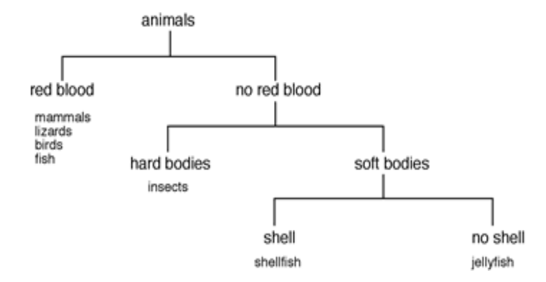
Sistemática clássica de Linneaus
Carolus Linneaus (ou Lineu ou só L.) e o “Systema naturae” (1758)
As edições da obra de Lineu podem ser encontradas em: https://www.biodiversitylibrary.org/page/728487#page/1/mode/1up
- Antes de Lineu:
- Descrição de leão: “gato com cauda longa e crina negra.”
- Descrição de girafa: “camelo-leopardo com cauda muito longa e pernas dianteiras longas.”
- Lineu criou o sistema binomial, que identifica cada organismo a partir do gênero e da espécie, que vigora até hoje, sendo mantido pelo Código Internacional de Nomenclatura Zoológica.
- Gênero e espécie aparecem em letras miníusculas sempre em destaque (negrito, itálico ou sublinhado), e somente o gênero começa com letra mauíscula, seguido pelos autores e ano da publicação.
Ex. Isolda sepultura (Garraffoni & Lana, 2003)
O sistema hierárquico de classificação de Lineu (original)
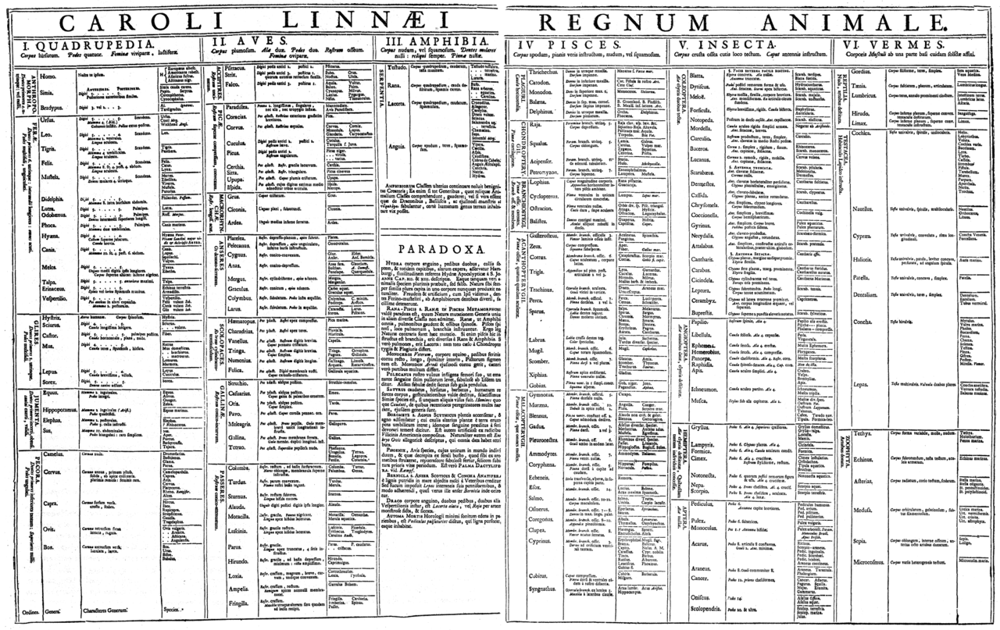
Sistema de classificação em zoologia
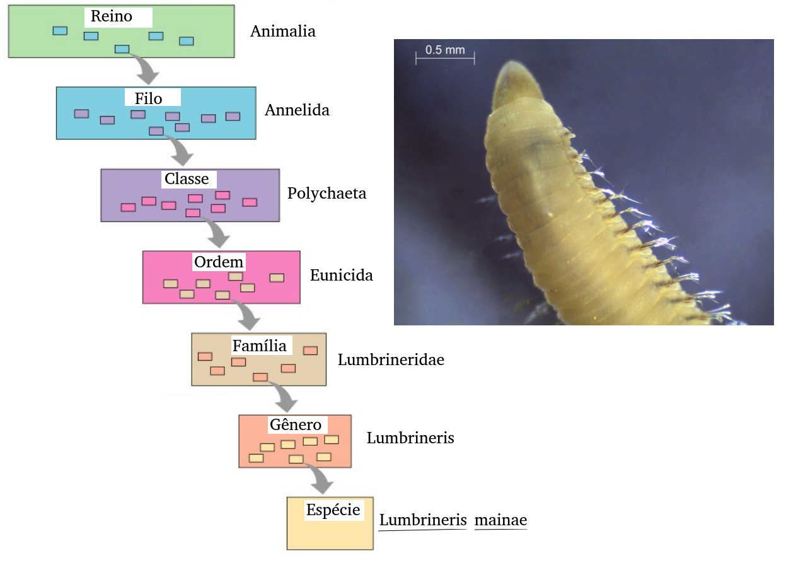
Sistemática evolutiva de Darwin
Darwin & Wallace e a origem das espécies por seleção natural (1858)
Inauguraram a escola da sistemática evolutiva:
“Os organismos descendem a partir de ancestrais comuns e o principal agente de mudança é a seleção natural.”
“Todos os organismos assemelham uns aos outros em graus descendentes, dessa forma eles podem ser classificados em grupos contidos em grupos.”
“…toda verdadeira classificação é genealógica.”
A árvore da vida: todos somos parentes.
“A árvore representa a melhor imagem das estruturas que sobrescrevem a hierarquia da vida.”
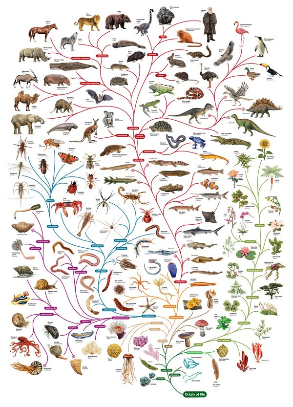
Processo de evolução: homologia e analogia
Caracteres homólogos: estrutura herdada a partir de um mesmo ancestral comum, com morfologia e origem embrionárias semelhantes, mas não necessariamente com a mesma função. Ex: membros dianteiros dos diversos mamíferos.
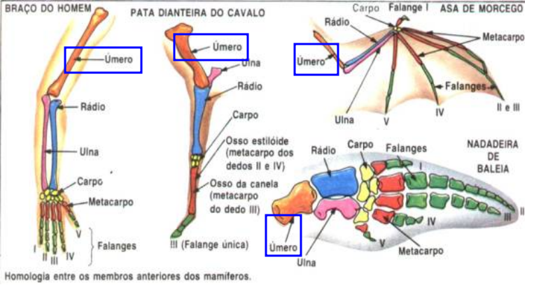
Caracteres análogos: estruturas análogas aparecem por evolução convergente, ou seja, convergem para estruturas semelhantes e podem executar as mesmas funções, mas têm origens ancestrais distintas.
Homologia é a similaridade devida ao ancentral comum.
Exemplos:
- Asas de morcego e pássaros não são homólogas, pois o ancestral comum não possuia asas. As asas evoluíram independentemente.
- Pêlos de humanos e cachorros são homólogos, pois o ancestral comum possuia pêlos.
- Asas de borboletas e pássaros são homólogas?
Sistemática evolutiva de Darwin
Darwin incorporou na classificação o critério evolutivo de ancestralidade comum entre os taxa.
O critério evolutivo de Darwin substituiu o critério morfologico de Lineu e teve enorme impacto nas árvores de classificação.
Sistemática filogenética de Hennig
Sistemática filogenética (ou cladística)
Hennig (1966) introduziu a sistemática filogenética, ou cladística, baseada no conceito do caráter derivado que marca os grupos naturais.
A história evolutiva dos grupos se tornou a base para a definição dos grupos.
É hora de aprender sobre dendrogramas e cladogramas.
Dendrogramas e cladogramas
Cuidado
Você vai encontrar muito por aí: DENDOGRAMA.
Isso é errado!
O correto é:
DENDROGRAMA!
Dendros significa árvore, em grego.
Cladograma e dendrograma
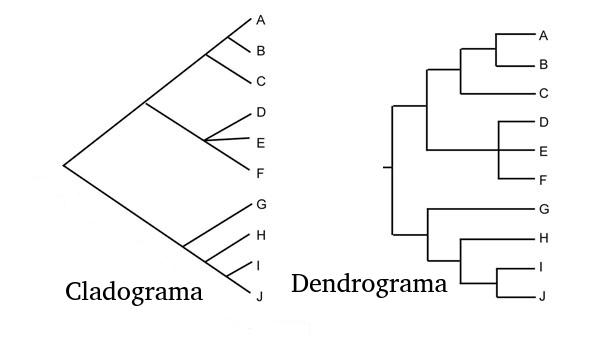
Vantagem do cladograma: os comprimentos relativos dos ramos representam unidades de tempo.
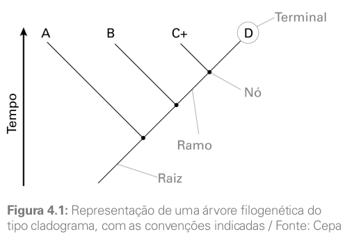
Cladogênese e anagênese
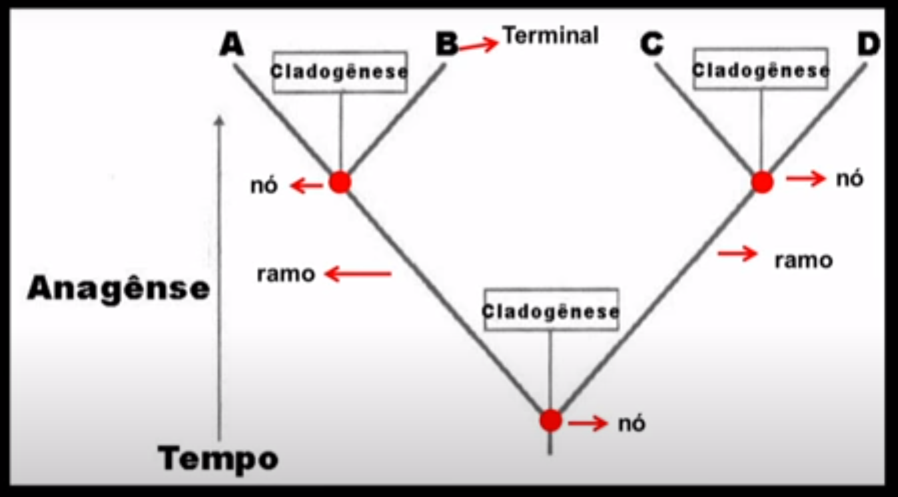
- Cladogênese é o aparecimento de um novo clado.
- Anagênese é o processo que leva à cladogênese.
Processo de anagênese: especiação alopátrica, ocasionada por barreira geográfica (isolamento reprodutivo), como no ístmo do Panamá.
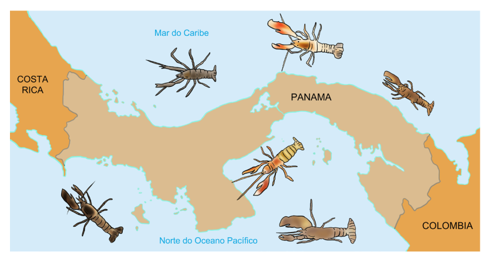
Existe também a especiação simpátrica, (mesma pátria), que é um isolamento reprodutivo sem separação geográfica.
Grupos monofiléticos e polifiléticos
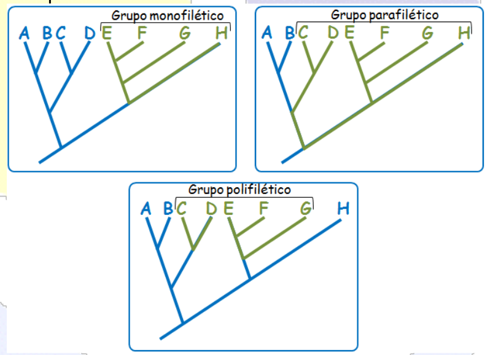
Grupos monofiléticos
Grupo monofilético é aquele formado por um ancestral e todos os seus descendentes, ou seja, possui um ancestral comum exclusivo.
Sinapomorfias e plesiomorfias
- Sinapomorfia: estado derivado. Define grupo monofilético.
- Plesiomorfia: estado ancestral. Define espécies que não fazem parte do grupo monofilético.
- Autapomorfia: estado ancentral a partir de um nó que gerou uma plesiomorfia e uma sinapomorfia.
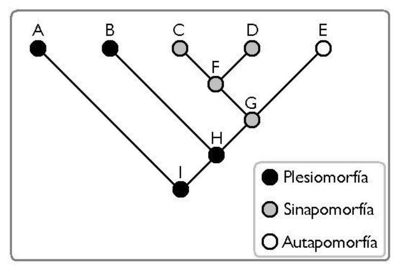
Exemplos de sinapomorfia:
- As penas distinguem as aves dos outros vertebrados e por isso é uma sinapomorfia das aves.
- Os pêlos nos mamíferos os distinguem dos outros vertebrados.
- A subclasse de insetos Pterygota é definida pela presença de asas.
- A presença de parapódios em poliquetas é uma sinapomorfia da classe em relação a outros Annelida.
Resumo de cladística
- Baseia-se no padrão de ancestralidade comum e modificação das espécies e não em mera similaridade morfológica.
- Deve usar apenas caracteres derivados (apomórficos) compartilhados (sinapomórficos ou homólogos derivados).
- Portanto, objetiva traçar a história evolutiva real, o padrão de descendência com modificação.
- Cada ramo da árvore evolucionária é chamado “clado”.
- O “cladograma” é uma árvore evolucionária que considera apenas homologias que são caracteres derivados compartilhados (sinapomorfias), gerando grupos monofiléticos.
Concluindo
A sistemática filogenética (Hennig) se diferencia da sistemática evolutiva (Darwin) pela discriminação de caracteres primitivos (plesiomérficos) e derivados (apomórficos).
Filogenia dos Metazoa
Tarefa altamente complexa.
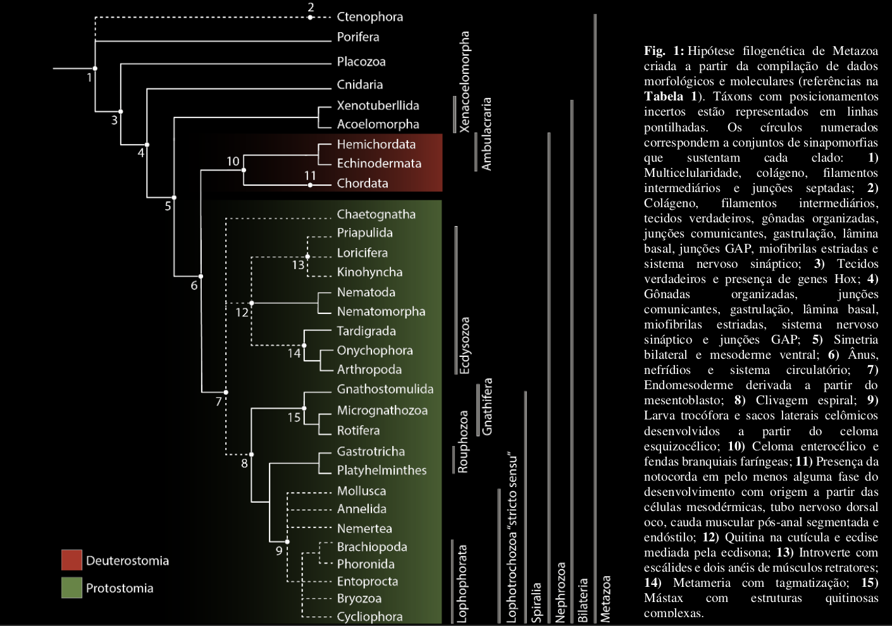
Filogenia dos Annelida
- É um dos filos com a filogenia menos conhecida.
- Recentes avanços em biologia molecular incluíram em Annelida outros filos menores: Pogonophora (Siboglinidae), Echiurida e Sipunculida.
- Biologia molecular revelou que Clitellata (Oligochaeta e Hirudines) são derivados da classe Polychaeta.